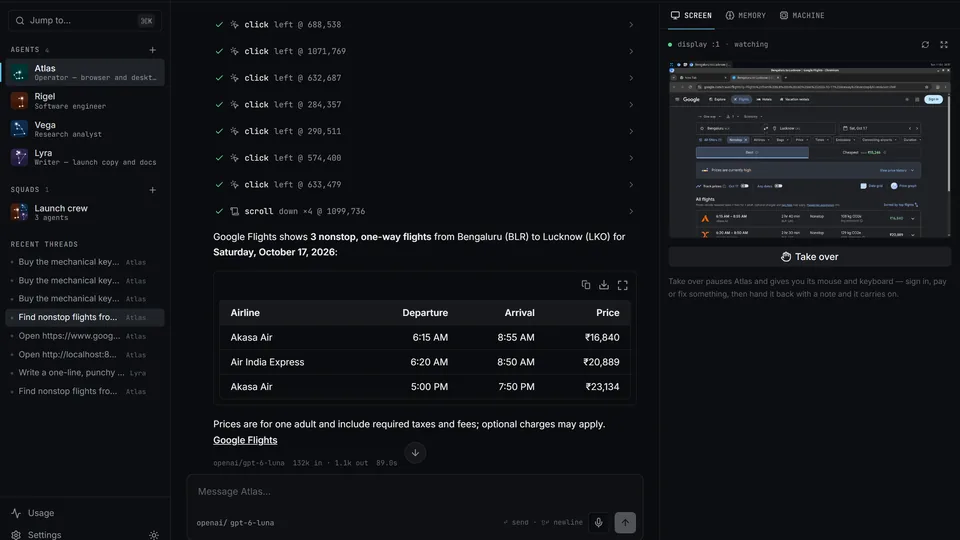
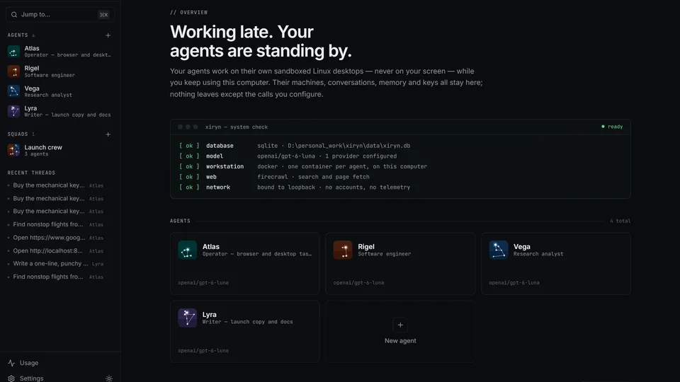

Your own AI personal agent, on your own machine: a hands-on guide to Xiryn
Meta has Muse, xAI has Grok Bot, OpenAI has Dots — impressive personal agents that are closed, subscription-gated, and run on someone else’s servers with your conversations, logins and payment details. Xiryn is the same idea as an open-source personal agent you run yourself: your data stays on your disk, each agent works on its own sandboxed Linux desktop, and you bring any model. Here’s how to set it up in about twenty minutes.
http://127.0.0.1:6796; a model API key (OpenAI, Anthropic, Google and 8 more providers) or the free Ollama mode powers the agents, Telegram pairing puts them on your phone, and routines let them work on a schedule.- What: Xiryn — an open-source personal agent where every agent works on its own sandboxed Linux desktop: a Docker container with a shell, a persistent home folder and a 1280×800 desktop with real Chromium — never touching your own files, mouse or screen.
- Project: SouravBeraAkaSpeed/xiryn, MIT license, launched 2026-10-11, 300+ GitHub stars (verified 2026-10-24).
- Install: one command —
curl -fsSL https://raw.githubusercontent.com/SouravBeraAkaSpeed/xiryn/main/setup.sh | bash(macOS/Linux) or thesetup.ps1equivalent on Windows. It installs Git, Node.js 20.9+ and Docker if missing, builds the agents’ desktop image once, and serves Xiryn athttp://127.0.0.1:6796. Needs ~4 GB of free disk. - Models: 11 providers — OpenAI, Anthropic, Google, xAI, Groq, Mistral, DeepSeek, OpenRouter, Ollama, LM Studio, or any OpenAI-compatible endpoint; pick a model per agent.
npm run setup:localinstalls Ollama and downloads a tool-calling model sized to your RAM (qwen3.5:2bunder 12 GB up toqwen3.6:27b), free and fully offline. - Control & trust: pair Telegram in minutes (@BotFather →
/newbot→ token in Settings → Remote access → scan the QR code); routines run on a schedule (“every weekday at 9, check for new jobs that fit me”); logins and cards live in an AES-256-GCM vault whose key your OS holds, agents never see the values, and every payment needs your explicit approval — Approve, I’ll pay myself, or Decline.
Every major lab now ships a personal agent that works on a cloud computer for you — Muse from Meta, Grok Bot from xAI, Dots from OpenAI. They are impressive. They are also closed, gated behind subscriptions, and they run on someone else’s servers with your conversations, your logins and — when they shop for you — your payment details.
Xiryn is the same idea as an open-source personal agent you run yourself. Clone it, add your API keys, and you get a team of agents that each own a Linux desktop in Docker — working in the background while you keep using your laptop — remember what matters, browse and research the web, write and run code, and hand work to one another. Nothing is stored anywhere but your computer, and you can message them from your phone.
It is an MIT-licensed project by Sourav Bera (SouravBeraAkaSpeed/xiryn) that launched on 2026-10-11 and collected 300+ GitHub stars in its first two weeks. The pitch that earned those stars: your agents never touch your computer, because each one works on its own sandboxed desktop.
What you'll need
- A computer with about 4 GB of free disk
- A Docker-capable machine — the setup installs Docker Desktop (Windows/macOS) or Docker Engine (Linux) if it is missing; on Windows it may ask for a restart to turn on WSL 2
- At least one model provider API key — OpenAI, Anthropic, Google, xAI, Groq, Mistral, DeepSeek or OpenRouter — or no key at all if you use the free Ollama mode
- Optional: a Telegram account, to steer your agents from your phone
- About 20 minutes (the first desktop-image build takes a few minutes, once)
Set up your personal agent team
1. Install with one command
Run this in a terminal — it asks once, then does the rest:
# macOS / Linux
curl -fsSL https://raw.githubusercontent.com/SouravBeraAkaSpeed/xiryn/main/setup.sh | bash
# Windows (PowerShell)
irm https://raw.githubusercontent.com/SouravBeraAkaSpeed/xiryn/main/setup.ps1 | iex
The setup (1) installs what is missing — Git, Node.js and Docker (Docker Desktop through winget on Windows or Homebrew on macOS; Docker Engine through get.docker.com on Linux); (2) clones Xiryn into ./xiryn and installs its packages; (3) starts Docker and builds the agents’ desktop image — a few minutes, once; (4) creates .env and starts Xiryn at http://127.0.0.1:6796.
First-run wrinkles from the README: Docker Desktop may ask you to accept its terms, and on Windows it can ask for a restart to turn on WSL 2 — afterwards run the setup again; it skips everything that is already done. Already cloned the repo? Run ./setup.sh on macOS/Linux, or double-click setup.cmd on Windows.
2. Add a model key — or go free with Ollama
Paste a model provider key into Settings in the app — or put it in .env:
OPENAI_API_KEY=<your-key>
FIRECRAWL_API_KEY=<optional, for fast web search>
Supported providers, eleven of them: OpenAI, Anthropic, Google, xAI, Groq, Mistral, DeepSeek, OpenRouter, Ollama, LM Studio, or any OpenAI-compatible endpoint — you can pick a model per agent. No key at all? In the Xiryn folder, run:
npm run setup:local
It installs Ollama if it is missing (asking first), downloads a model with tool calling and vision that fits your memory — qwen3.5:2b under 12 GB, qwen3.5:4b under 20 GB, qwen3.5:9b under 40 GB, qwen3.6:27b above — and makes it the default. Pick one yourself with npm run setup -- --local --model=gemma4:e4b, or download more later in Settings → Local models. Local models are slower and less capable than the big hosted ones, but they cost nothing and nothing leaves your computer.
3. Start it and meet your agents
cd xiryn
npm run dev # or: npm run build && npm start
Open http://127.0.0.1:6796 and deploy your first agent. Open Templates in the sidebar and pick one — 16 ready-made agents in four groups: Everyday (Atlas, the operator for anything that needs a real browser; Altair, the shopping scout; Polaris, the travel planner; Mira, the personal assistant), Work (Capella the job hunter, Sirius the writer, Antares the social media manager, Castor the lead researcher), Research (Vega, Deneb, Spica) and Build (Rigel, Arcturus, Electra, Lyra, Pollux). Or deploy a squad in one click: Crew (Atlas, Vega, Rigel, Lyra), Launch crew, Trip team or Dev team.
Each agent gets its own desktop and memory. Click alerts in the status bar once to allow desktop notifications: you will hear a chime and get a notification whenever an agent finishes, fails or needs you — even with Xiryn in the background.

4. Give it a real job
Start with something concrete: ask Altair to compare prices for a product and prepare the order, or Vega to research a topic and come back with cited sources. Watch the agent click and type in real time on its own desktop — agents open a site’s home page and use its own search forms and filters instead of guessing deep links, so you can follow along and step in at any point. Because the agents’ machines run on your computer, sites see an ordinary home connection rather than a data center — no blocked sites, far fewer CAPTCHAs.
At a login, a payment page, a one-time code or a CAPTCHA, the agent stops by itself and tells you exactly where it is and what is left. Hit Take over: it pauses, you type or click, then Hand back with an optional note (“I picked the 6:40 flight”) and the agent looks at the screen and continues from there. Close the tab mid-task and the agent keeps going — reopen and you are re-attached to the live stream.
5. Put it on a schedule
Routines are tasks your agents do on their own, on a schedule — while you sleep, with the browser closed. Just say it in the chat: “every weekday at 9, check for new jobs that fit me” or “tomorrow at 7, remind me to call the bank” — the agent schedules the routine itself. Or set it up on the Routines page: who does it, what to do each time, and when — every day, weekdays, one day a week, every few hours, or just once.
Each routine has its own thread. When a run finishes you get an in-app notification, a desktop notification when no tab is open, and a Telegram message if it is paired. A routine’s History lists every run: when, how long, what it cost, and why one failed or was skipped. Runs use your computer’s local time — and Xiryn has to be running: npm run background -- login keeps it that way.
6. Pair Telegram and steer it from your phone
In Telegram, message @BotFather → /newbot → copy the token. Paste it in Settings → Remote access, scan the QR code with your phone and tap Start. Done — only your account can use the bot. No public URL, no tunnel, no port forwarding: Xiryn polls Telegram from your machine.
From the bot: /agents picks an agent or squad, /new starts a fresh thread, /stop interrupts, /status shows what is running. When an agent needs you — a payment, a login, a code — the bot pings you with a live link to the agent’s desktop. Finish the step from your phone, reply “done”, and the agent carries on.

7. Keep it running in the background
npm run background # starts Xiryn with no terminal or browser needed
npm run background -- login # …and whenever you log in to this computer
npm run background -- stop # stop it (status, restart and no-login work too)
It serves a production build on 127.0.0.1 and logs to data/xiryn.log. Agents, routines and Telegram keep working with every window closed. When something new is pushed, an update button appears next to the Xiryn logo — or update by hand:
cd xiryn
git pull
./setup.sh # Windows: setup.cmd
Your data — data/xiryn.db, the vault and the agents’ home folders — is untouched by updates.
What you built
A personal agent team on your own machine: agents working on sandboxed Docker desktops while you get on with your day, long-term memory shared across every thread, routines running on a schedule, and your whole operation steerable from Telegram — with conversations, memory and keys in a single SQLite file on your disk and nothing stored on anyone else’s servers. Pay providers directly for what you use, or run the whole thing free on Ollama.
Honest limitations
- Docker is non-negotiable. Every agent runs in a Docker container; the first desktop-image build takes a few minutes and the stack wants ~4 GB of disk before any model is downloaded.
- Hosted models cost money. Each reply shows its price, the Usage page adds it up by day, model and agent, and you can set a monthly budget that pauses paid models — but a chatty agent on a frontier model can still surprise you. Local Ollama models are free but slower and less capable.
- It is two weeks old. Launched 2026-10-11 with 300+ stars; expect rough edges. The README’s own comparison table is “based on public launch coverage as of October 2026” and invites corrections.
- Routines need Xiryn running. Scheduled runs fire from your computer’s local time, and a run missed while the computer slept only happens if it is back within a few hours — this is not a cloud cron.
- Your card is still your card. The vault is AES-256-GCM with the key in your OS keychain, agents never see the values, and every payment needs your explicit approval (Approve, I’ll pay myself, or Decline) — but review any shopping routine’s instructions before you let it run unattended.
- Voice mostly stays local. The mic button uses your browser’s speech recognition — on the device itself where the browser supports it, so your voice never leaves your computer.
Frequently asked questions
Do I need an API key?
Not to install. For hosted models you need at least one provider key — OpenAI, Anthropic, Google, xAI, Groq, Mistral, DeepSeek, OpenRouter, or any OpenAI-compatible endpoint. With no key at all, run npm run setup:local for the free Ollama mode: slower and less capable, but nothing leaves your machine and nothing is billed. Each reply shows its price and the Usage page totals it by day, model and agent.
Does it touch my computer?
No. Every agent works on its own sandboxed Linux desktop — a Docker container with a shell, a persistent home folder and a 1280×800 desktop with Chromium — completely separate from your system. It never moves your mouse, takes over your screen or reads your files. You can watch it work live and hit Take over at any point to grab the desktop yourself.
How do payments and logins work?
Logins, cards and personal details live in an encrypted vault (AES-256-GCM, key held by your OS keychain) and agents never see the values — an agent gets “Visa ···· 4242” while Xiryn types the card itself. At checkout the agent asks: Approve, I’ll pay myself, or Decline. A saved login only fills on its own site, and at any login, payment or CAPTCHA the agent stops and hands you the screen — including a live desktop link over Telegram.